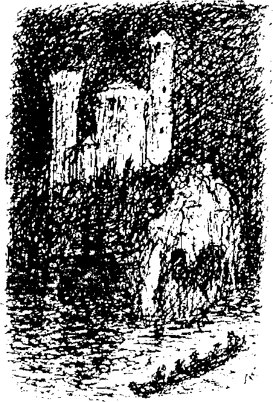

şey sessizleşti. Bir grup timsah, göbekleri şişmiş halde nehre döndü.
Kimileri yakındaki mezarlıkta mezarları kazmaya başladı; kan kokusu almış kuduz bir köpek, ezilmiş bir kedinin üzerine atladı.
Sonra yanımda korkuyla yere çömelmiş olan bir yaratığı fark ettim. Bu Brendel’di. Yüzünde boş bir gülümsemeyle bana bakıyordu. “Ne oldu, Brendel?" dedim, onu hafifçe sarsıp uyuşukluğundan çıkarmaya çalışarak.
“Melitta,” dedi yavaşça ve kendi kendine sessiz bir kahkaha attı. Bu kahkaha, zavallı adamın sevgilisinin ölümü sonrasında aklını yitirdiğini anlamama yetti.
Ateşler artık sönmeye yüz tutmuş, etraf sessizleşmişti. Saklandığım yerden çıkmayı göze alıp alamayacağımı tarttım. Duyulan tek ses, sarhoş güruhtan yükselen horultuydu. Hala alevler saçan büyük bir ateş vardı; piyanonun tahtaları sayesinde yanmaya devam ediyordu. Ateşin parlaklığında geniş omuzlu birini gördüm: Amerikalı.
Üzerindeki gece giysisiyle sanki baloya gidiyormuş gibi bir havası vardı ve vazgeçilmez piposu da ağzındaydı. Uyuyan vücutların arasından geçerken çıplak bir kadın ayağa kalktı ve onu durdurmaya çalıştı. Çaat! Bir kırbaç darbesi kadının sırtında patlamış, beyaz cildi üzerinde ateş kırmızısı bir iz bırakmıştı. Sonra Amerikalı karanlığa daldı ve bir gürlemenin yükselmeye başladığı şehre doğru ilerleyerek ortadan kayboldu.
Amerikalı ’nın vakti gelmişti.
IX
Şehirde, Ses’in özel bir baskısı yeni bir felaketin haberleriyle dağıtılıyordu. Büyük tapınak, gölün sulan altında kaybolmuştu. Haberi keşişler vermişti. Suyun uzun bir süredir temelleri zayıflatmasından dolayı kumlu toprağın en sonunda çöktüğünden şüpheleniyorlardı. Keşişlerin bazıları ilahi okuyarak boğulmuştu. Ölüm karşısında afallamış olmalılardı, çünkü binanın yarısı suya gömülmüş haldeyken bile çaldıkları boruların sesi duyuluyordu. Her şey büyük bir hızla gelişmiş, ağır, mermer duvarlar yıkılmadan suya batmışları. Kaçmış olan kutsal kardeşler, lekeli camlardan çağıldayarak içeriye dolan suyun sesini duyana dek tehlikenin farkına varmamışlardı. Şişmanlıkları su üzerinde durabilmelerini sağlamıştı ve yüzüp hayatlarını kurtarabilmişlerdi. Işıklar suyun derinliklerinde de yanmaya devam etmiş, tapınağın pencerelerinin mitlerdeki deniz canavarlarının gözleri gibi parlamasını sağlamıştı. Sonra peşpeşe sönmüşler ve geriye yalnızca gümüş ve altından kubbelerin titrek parlaklığı kalmıştı. Sonra onlar da dalgaların altında kaybolmuştu. Muhterem başrahibin cesedi kıyıya vurmuş, geride kalanlar ise Rüya Gölü’ nün dibinde sulu bir mezara gömülmüştü.
İnsanlar, dalgaların altında kaybolan muhteşem hazineler için yas tuttu. Özellikle de ben tuttum, çünkü onları kendi gözlerimle görme fırsatını hiç bulamamıştım.
Büyük hayvanlar artık tamamıyla yok olmuştu. Bunun önceden aklımıza gelmeyen bir zararı olmuştu: Ne yiyecektik? Hayvan sürüleriyle böcek kümeleri tarla ve bahçeleri harap etmişti. Tüm erzağımız çürüyordu; yumurtalar, tuzlanmış sığır etleri ve tütsülenmiş domuz etleri bile bozuluyordu. Açlıkla karşı karşıyaydık.
İşte o sırada kuzey Almanya’dan gelen iki kız kardeş pratik bir teklifte bulundu. Bir tanesi kimya okumuştu ve başarılı olacağına inandığı bir araştırma sonucu vardı. Negro’nun kıyılarına bol miktarda vurmuş olan ölü balıkları toplamayı ve onları arıtıp yenilebilir hale getirmeyi öneriyorlardı. Niyetlerinin soyluluğuna rağmen kız kardeşlere verilen karşılık saf bir nankörlük oldu: öfkeli topluluk tarafından linç edildiler.
X
Artık geceyle gündüzü ayırt etmek mümkün değildi. Daimi alacakaranlığın değişmez griliği de insanın etrafını görmesini zorlaştırıyordu. Tüm saatler paslanmış ve durmuş, bu yüzden zaman kavramımız yok olmuştu. Bu durum yıkılma döneminin ne kadar sürdüğünü söylememi de imkânsız kılıyor. Arada bir açlıktan derileri kemiklerine yapışmış vahşi hayvanlar görüyorduk, ama yaklaşan bir insanı gördükleri anda kuyruklarını zayıf bacaklarının arasına sıkıştırıp kaçıyorlardı. Tozlu köşelerden kurumuş yılan kalıntıları çıkıyordu.
Salgın hastalıkları önlemek için Rüya Ülkesi sakinlerine tüm cesetleri nehre atmaları emredilmişti. Bu emir oldukça küçük bir oranda uygulanabiliyordu, çünkü evler güvenli değildi ve artık kimse içlerine girmeye cesaret edemiyordu. Şehrin havası yılan ve tavşanların saklı mezarlarındaki ölü yavrularıyla kirlenmişti. Binaların girişlerinden dışarıya çürüyen leşlerin kokusu yayılıyordu.
Lampenbogen’in apartmanının üst kısmı çökmüştü. Uzun bir baca ve arka duvar ayakta kalmıştı ve bu sayede daireleri yandan görebiliyordunuz. Eski yatak odamızın çiçekli duvarkağıdıyla kaplı duvarında hala birkaç resim asılıydı. İri, üçgen şeklindeki bir delikten prensesin bekleme odasının kirli tavanı görünüyordu. Mandıra küfe yenik düşmüştü. Başıboş bir şekilde yayılmış olan küf, kapıları ve pencereleri kaplamış, tüm binanın biçiminin bozulmasına sebep olmuştu. Dam penceresinden büyük beyaz çarşafları andıran küf öbekleri sarkıyordu. Nehir bekçisinin ahşap evi, çatısında biriken likenlerin ağırlığıyla çökmüştü.
Kafe, dış görünüşünü son gününe dek korumaya çalışan bir kokona gibi öldü. Dışarıdan bakımlı bir görüntüsü vardı, fakat içerisi üst katın ve tavanarasının yıkıntılarıyla doluydu. Tuhaf bir görüntü de arkasında karıncalardan oluşmuş iki yüksek tepenin görüldüğü bir pencere camıydı. Karıncaların altından birkaç küçük beyaz kemik görülüyor, aralarındaki satranç masasında mükemmel bir şah mat bulunuyordu.
Terkedilmiş sokaklardan geçerek nehir kenarında her zaman yaptığım yürüyüş yoluna saptım. Aynı harap görüntü burada da mevcuttu. Mezbahadan öylesine berbat bir koku yükseliyordu ki ağzımı ve burnumu mendil olarak kullandığım bir çaputla kapatmak zorunda kaldım. Nehre bakan duvarı yıkılmıştı ve molozların arasından üst üste yığılmış hayvan leşleri gözüküyordu. Hava vızıldayan sineklerle doluydu ve attığım her adım milyonlarca et sineğini rahatsız ediyordu. Biraz temiz hava solumak için nehir kenarına indim, orası diğer yerlere nazaran daha katlanılabilirdi. Yüzme havuzundan geriye pek bir şey kalmamıştı, yalnızca sudan fırlayan birkaç kalas ve direk vardı. Onlar da yeşil renkli salyangoz salgısı ve sümüklüböcekten oluşan kalın bir tabakayla kaplıydı. Etraf aniden aydınlandı. Şiddetli bir irkilmeyle arkamı döndüm ve değirmenin yandığını gördüm. Pencereleri, gözleri kör eden alevlerle doluydu ve çürümüş kirişleri cızırdayıp çatırdıyordu. Yüksek, yuvarlak çatısından dumanlar tütüyordu. Muazzam bir alev yükseldi ve ön duvar çatırdayarak içeri doğru yıkıldı. İçerinin aydınlığında görünen makineler hala işliyordu, sanki vücudu yarılmış bir insanın içine bakmak gibiydi. Çark gıcırdıyor, değirmen taşı dönüyor, sandık titriyor, un bulutları alevlerin parlaklığı üzerinde hafif bir pus oluşturuyordu. Alevler, küfle kaplı merdivenleri açgözlülükle yuttu. Makineler ağır ağır, adeta gönülsüzce, ölmekte olan bir adamın organları gibi birbiri ardına durdu.
Alevlerin son kurbanı iri elek olmuştu. Durduğum yerden bir çift eski moda çizme ve yan yok olmuş bir halde içlerine sıkışmış olan iki bacak gördüm, alevler görüntünün kalanını gizliyordu. Arkamda bir ses yankılandı.
“Başardım! Şimdiden dört kez yaptım ve yapmaya da devam edeceğim.”
Değirmenciydi. Bir tutam enfiye çekti, cebinden bir jilet çıkardı, başparmağıyla keskinliğini kontrol etti ve gırtlağını kesti. Yere düştü ve kan, göğsünün üzerine suyun kaynaktan fışkırdığı gibi fışkırdı. Yüzü şeytani bir ifadeyle çarpılmıştı.
Kutsal şeylere hürmet etmeyen hırsızlar rahibe manastırına zorla girip mücevherlerle süslü mukaddes emanetleri çalmışlardı. Kendileri de zor durumda olan rahibeler soygunu durdurmak için hiçbir şey yapamamışlardı. Çorba mutfaklarına yaptıkları ziyaretler dolayısıyla manastırın her yerine aşina olan bir grup sakat adam misafırhaneye hücum etmişti. Tehditkâr yemek talepleri, kendileri için bile yiyecek şeyleri olmayan rahibeler tarafından geri çevirilmişti. Onlar da kaba kahkahalar atarak yiyecek yerine geçecek başka şeyler istemişlerdi. Aşağılık grup topallayıp sürünerek çaresiz rahibelere sokulmuştu. Cadılara özgü bir sebt gününü andırıyordu. Genç ve güzel bir kız onlara karşı koymuş, çift guatrlı bir adama saldırıp adamın tek gözünü çıkarmıştı. Kız, ceza olarak demir bir karyolaya bağlanmıştı. Üstleri bitle kaynayan, burunları kemirilmiş, gözleri iltahaplanmış, yumruk kadar frengi çıbanları ve uyuz yarası kabuklarıyla kaplı yaratıklar kızın üzerine çullanıp ona tecavüz etmişlerdi. Kız önce delirmiş, sonraysa ölmüştü. Diğer rahibeler ise tanrının kavranmaz emirlerine boğun eğmişlerdi; sadece seksen yaşındaki başrahibenin, büyük ihtimalle coşkulu dualarının bir sonucu olarak, canı bağışlanmıştı.
XI
Amerikalı artık şehrin efendisi olarak rahatça ortalıkta dolaşıyordu, ancak buna rağmen kendisi de az kalsın yolun sonuna gelecekti. Müritlerine olan borcunu ödemek amacıyla, yardımcılarıyla birlikte bankanın önüne gelmişti. Harap olmuş devasa kapının ardına kadar açık olduğunu gören herkes çok şaşırmıştı. Yorucu aramalar sonucunda merkez hazine odasında seksen üç kreuzer olduğu ortaya çıktı; rehin kutusu da ortalıkta yoktu. Jacques, De Nemi ve diğer elebaşları Amerikalı’yı şüpheli bakışlarla süzdü. Amerikalı hiddetle haykırdı; “Tam düşündüğüm gibi". “Hemen Herr Blumenstich'i görmeye gidiyoruz." Banker Blumenstich'i serasında, solmuş çiçeklerle çevrili halde buldular. Adamcağız, beyefendileri mutlak bir sükûnet ve mosmor kesilmiş bir cilt ile karşıladı: Ölmüştü. Kendisini kovalayan bir eşekarısı sürüsünden kaçmak için buraya saklanmıştı. Avazı çıktığı kadar bağırdığı sırada böceklerden biri dilini sokmuş ve adam boğularak ölmüştü. Herkes yeniden Amerikalı’ya baktı ve o bu sefer sadece, “Kahretsin!" dedi.
“Bize paramızı ödeyeceğine söz verdin! Altınımızı ver!" diye haykırdı kızgın müritler.
“Gidin ve otelin kalıntılarından kendiniz alın," diye cevapladı Amerikalı, sinirli ve hayalkırıklığına uğramış bir halde.
Diğerleriyle gözgöze gelen Jacques, bıçağını gizleyerek Bell’e doğru bir adım attı. Her hareketi pür dikkat izleyen Amerikalı, suikastçiyi bir değnek darbesiyle yere indirdi. Sonra, sırtını soğukkanlılıkla seranın duvarına dayayıp ellerinde birer Browning’le, ahenkli bir tonda sordu: “Hanginiz ilk 16’nın içinde olmak istiyor?”
Çete daha kolay bir avanta bekliyordu. Öndekiler eğilip geri çekilmeye çalıştılar, fakat arkadan çığlıklar atarak bastıran güruh tarafından ileri itildiler. Silahlar ardarda, tiz çatırtılar çıkararak patladı ve Amerikalı’nın önünde cesetlerden bir duvar oluştu. On altı kişiden fazlası ölmüştü, çünkü her mermi birden fazla bedeni delip geçmişti. Amerikalı çıplak kafasıyla, üzerinde akşamki kıyafetiyle, geniş omuzlarıyla ve dişleri arasına sıkıştırdığı piposuyla dimdik ayaktaydı. Alnının geniş tepesi, üzerindeki iki şişlikle ona şeytansı bir görünüş kazandırıyor ve sabit, hükmeden bakışları hiddetli kalabalığı yatıştırıyordu. Ancak hala arkadan itiyorlardı. Öndekiler baskıya dayanamayıp kendilerinden geçti ve ölü yoldaşlarının üzerine yığıldı. Böylece Bell’in hareket etmesini imkânsız hale getiren etten bir duvar oluşturdular. İnsan suratını taklit eden soluk ve çarpık maskelere benzeyen yüzleri yalnızca bir metre önündeydi. Göğsü inip kalkıyor, ciğerleri bir lokomotif gibi çalışıyordu. Şans yardımına geldiğinde “Öldürün onu! Öldürün onu!" diye bağıran meşum çığlıklar kulaklarını dolduruyordu. İğrenç küfürler savuran bir ses yaklaşıyor, yaklaştıkça gürleşiyordu.
“Kim o?" bağırışları yükseldi. “Kim o?"
“Gotthelf Flattich. Dev Gotthelf. Kollayın kendinizi!"
Göğsü açık, muazzam bir yaratık kalabalığı iterek kendine yol açıyordu. Adamlar homurdanıyor, fakat herkesten rahatlıkla bir buçuk kafa daha uzun olan zencinin geçmesi için kenara çekiliyorlardı. Bağırışları duymuştu ve bir göz attığında Amerikalı’nın içinde bulunduğu tehlikenin farkına varmıştı.
“Ona parmağınızı bile sürmeyin!" diye uzaklardan duyulabilecek bir sesle kükredi ve dev ellerinde tuttuğu manivelayı savurdu. Gözbebekleri, siyah suratında hiddetle dönüyordu. Yakınında bulunanları yere indirdi ve böylelikle eski patronunun hayatını kurtardı.
XII
İnsanlar Arşiv’in önünde toplanmıştı. Ana kapının iki kanadı da açıldı ve Devlet Başkanımız, ufak bir heyet eşliğinde dışarı çıktı. Ekselansları kutlama giysilerini giymişti; altın şeritlere sarınmış, madalyalarım takmış ve tüylü miğferini başına geçirmişti. Uzaktan bir cennet kuşuna benziyordu. Muhteşem üniformasıyla hemencecik kuruluveren bir kürsüye tırmandı. Toplanmış olan Rüya Ülkesi halkı sessizleşti.

“Beyefendiler, sizler de fark etmişsinizdir ki istisnai bir dönem geçirmekteyiz. Bu artık sona ermeli, normalliğe bir dönüş yolu olmalı. Rüya Ülkesi halkının mutluluğu bizim en büyük dileğimizdir. Saygıdeğer Efendimiz işledikleri suçlardan dolayı cezaya çarptırılanlar için af çıkarmıştır. Bu yüzden, eyalet hapishanesi Wasserburg’un kapılarının bugün açılması için emir verdim.”
“Bu zaten yapıldı!” dedi, küçümseyen bir ses. “Onları kendimiz serbest bıraktık,” diye haykırdı herkes, kahkahalar atarak.
Wasserburg, nehirden aşağı bir günlük uzaklıkta, Negro’nun ortasındaki bir kayalığın üzerinde, Bellamonte isimli küçük kasabaya pek uzak olmayan bir mesafedeydi.
Ekselansları’nın ağzını açıp kapadığı görülebilse de söyledikleri gürültüden duyulmuyordu. Sonunda, kalabalığı sakinleştirme çabalarının nafile olduğunu anlayıp hafifçe başını eğdi ve kürsüden inmeye yeltendi. Arkasını döndüğü anda kalabalığın kahkahalara boğulduğunu duydu. Ekselansları’nın altın şeritlerle süslü pantalonunun arka kısmı düşmüştü. “Hoi Polloi’yi eğlendiren şeyler pek tuhaf,” diye düşündü.
Ani bir patlama oldu; toz bulutları, dumanlar etrafa yayıldı. Çok sayıda insan bayıldı ya da ezildi. Bir bomba atılmıştı, ama nereden geldiğini kimse bilmiyordu. Ölüler ve ağır yaralılar sedyelerle götürüldü. Rüya Ülkeliler, kan lekeli yükleri taşıyan alayı tüyleri ürpererek izledi. Ekselansları ’nın iki ayağı kopmuş, vücuduna çarpan çelik bir şarapnel onu öldürmüştü.
Bu olanları hiç görmemiştim, çünkü mezarlıktaydım. Kutsal şeylere karşı yapılan bunca hürmetsizliğin ardından karımın mezarını merak etmiştim. Üzerindeki kabartılmış toprağa dokunulmamıştı, fakat küçük demir haç tamamen paslanmıştı.
Mezarlığın öteki ucunda yeni kazılmış toplu mezarlar gördüm. Ölüler artık alelacele, en fazla dört fit derinliğe gömülmekteydi. Yaydıkları pis koku, yeni çıkarılan toprağın etrafında toplanan ve yemeklerinin tadını çıkarırken vurulan kurtları, köpekleri ve çakalları doğal olarak oraya çekiyordu. Eğer Blumenstich aile kabrinin kalıntıları arkasındaki, yüksek omuzlu, kişneyerek kahkaha atan karanlık yaratık bir sırtlan değilse oldukça yanılmış olmalıydım. Mezarlığın üzerinde kurşuni bir hava vardı. Ezilmiş çiçekler, ağaç dalları ve çürümüş çelenkler ortamın zaten fazlasıyla kasvetli olan havasını daha da ağırlaştırıyordu.
Tüylerim ürperdi. Yatak yüzü görmeyeli uzun zaman olmuştu.
Sonra aklıma bir süre önce gördüğüm bir ilan geldi; polis karakollarında evsizlere battaniye dağıtılıyordu. Morgun üzerinde de ara bir kapıyla ulaşılabilen bir karakol vardı. Başım önüme eğik, üzgün bir halde oranın yolunu tuttum. Sanki çökmüş bir şeylerin üzerinde yürüyormuş gibi hissediyordum; yosun, saman ya da keten olabilirdi. Selviler önümden çekiliyor gibiydi. Mezartaşlarının titrek ışıklarının parlaklığında kaba tuğlalardan yapılmış alçak bir bina gördüm. Açık, camdan kapılarında “Polis Karakolu” yazıyordu.
Girdiğim odada neredeyse hiç eşya yoktu. Baş hizasında büyük, kare pencereler vardı, ama donmuş camlarından içeriye sadece soluk bir ışık girebiliyordu. Eski püskü duvarlarda, dar siyah çerçevelerin içindeki yönetmelikler asılıydı; arka tarafta, kapalı bir kapının üzerinde Bavyera Kralı II. Ludwig’in bir resmini gördüm. Sivri köşeli, ilkel gaz vanaları, badanalı yüksek tavana tutturulmuştu. Odadaki bir başka eşya da uzun, pis bir masaydı ve üstünde iğrenç bir nesne vardı; kısa, şişmiş bir insan bedeniydi ve üzerinde altın şeritler ve kan ile süslü bir üniforma vardı. Oldukça katılaşmıştı, sadece bacakları hafifçe eğrilmişti. İki ayağı da yoktu, pantalon paçaları dizlerin altından düğümlenmişti.
Aklımdan geçen düşünce “İşte Bavyera Kralı bu” oldu ve hemen bu düşüncenin doğru olduğuna kanaat getirdim. Siyah, seyrek bir keçi sakalının gölgelediği çenesi havaya fırlamıştı, ama şişman suratını daha yakından incelemeye cesaret edemedim, çünkü hain bakışlarının canlı bir biçimde beni takip ettiğini biliyorum ve böyle bakışlara fazlasıyla maruz kalmıştım.
Sağımdaki cam kapıdan bir ışık huzmesi süzülüyordu. “Belki de polisler buradadır?” diye düşündüm. Camdan içeri baktım ve korkuyla geri çekildim. Uzun dar bir odaya yığılmış yüzlerce ceset görmüştüm. Boyunlarına dek gri çuvalların içindeydiler ve yalnızca kafaları dışarıda kalıyordu, yüzleri çoğunlukla yeşildi, görünüşte gülüyor ve dişlerini gösteriyorlardı. Birçoğu kurumuştu ve kirli, ezik gözleri vardı, diğerleriyse tamamen sarmalanmış ve üzerlerine adres belirten kâğıtlar yapıştırılmıştı. Diz ve dirseklerin oluşturduğu çıkıntılar ve kafataslarının bükük duruşları belli oluyordu. Ceset deposunun arka duvarında büyük harflerle yazılmış bir tabela asılıydı:
ANİDEN ÖLENLER MORGU
Kendimle II. Ludwig arasına mümkün olduğunca mesafe koyarak açık havaya çıktım. Birden masada yatan altın süslü üniformalı adamın Bavyera Kralı filan değil, Devlet Başkanımız olduğunu fark ettim.
“Bir sır biliyorum,” dedim kendi kendime, “ve onu kendime saklayacağım. Hem bu belki de gerçekten Bavyera Kralı’dır."
XIV
Kargaların kasvetli gaklamaları dikkatimi çekti. Kuşlar, uzun, siyah ve birbirine yakın halde tuğlaların üzerine tünemişlerdi. Bazen birkaçı havalanıp kusursuz bir düzenle tur atıyordu. Nehrin üzerindeki gökyüzü yanan değirmen yüzünden halen kırmızıydı.
Yıkıntılar arasından aniden fırlayan çıplak bir adam beni neredeyse yere indiriyordu. Arkasında bir köpek sürüsü vardı! Hızla üzerime doğru geldi, ama son anda yön değiştirip çıplak bir süpürge sopasından biraz daha büyük bir ağaca tırmandı. Üzerinde yalnızca rugan kadın ayakkabıları ve gazetelerden yapılmış bir sarık vardı. Kavruk bedeninden beklenmeyecek bir güç ve çeviklikle kendisini ıhlamur ağacının dallarında savurarak yükseklere çıktı. Arkasında sürüklediği nesneye rağmen bir maymun gibi rahattı. Taşıdığı şey küçük dallara takılıp duruyor, adamın her seferinde onu kurtarması gerekiyordu ve bu kurtarma işini komik bir ciddiyet ifadesiyle yapıyordu. Onu kovalayan köpekler ağacın çevresine dizilip sanki bir kediymişçesine adama heyecanla havlamaya başladılar.
O anda mezarlık yönünden miğferli bir polis müfrezesi geldi.
Ağaçtaki adam değerli yükünü düşürdü, bir çığlık koyverdi, aşağı atladı, düşürdüğünü almak için yerde biraz debelendi ve peşinde köpeklerle hızla uzaklaştı. Bir av köpeği topuklarının dibindeydi.
Polislerden biri en öndeki köpeğe ateş etti. Köpek öldü, ama adam da vuruldu ve yere devrildi. Onun Brendel olduğunu gördüm. Ayağa kalkmaya uğraşırken başına toplandık. Delirmişti, ağzından salyalar saçarak inliyordu. Sağ kürek kemiğindeki ufak kurşun yarasından neredeyse hiç kan gelmiyordu. Giderek durgunlaştı ve soğudu; vücudu son bir titremeyle sarsıldı ve öldü.
Böylesine kararlı bir biçimde sakladığı şeyin ne olduğunu merak eden polisler Brendel’i yerden kaldırdı. Çürümekte olan, uzun kestane rengi saçlı bir baş ortaya çıktı. Canlıymış gibi duruyordu; kafaya sonradan eklenmiş gibi duran göz çukurlarında ve dudakların etrafında hareket vardı. Binlerce kurtla kaynıyordu.
XV
Şehir, açık bir isyanla kaynıyordu. Ordu, saray bahçelerinden yaklaştı ve birkaç bölük Saray’ın dışında mevzilendi. İyi görünüşlü, özenle seçilmiş, son haftalarda yaşadığımız dehşetlerin izlerini taşımayan adamlardı. Göğüs zırhlan ve miğferlerinde hafif pas lekeleri vardı, bunun dışında iyi durumdaydılar.
İsyancılar, aceleyle dikilmiş barikatların arkasında konuşlanmıştı. Patera’nın tek firari subayı olan De Nemi’nin önderliğinde birkaç saat önce cephaneliği yağmalamışlar ve ihtiyaçları olan tüm silahlan almışlardı. Orduya, bire on gibi sayısal bir üstünlük sağlıyor olmaları onlara cesaret veriyordu.
Karşı saflarda ise atlar toynaklarını sabırsızca yere vurmaktaydı. Kumandanları dürüst yaşlı Albay Duschnitzky dışarıdaki güruh tüfekli olduğu için son derece endişeliydi. Ve kendi atlarının halinden de pek memnun değildi. Sinirliydiler ve oldukça kötü tımarlanmışlardı. Saldırmadan önce, geleceği söylenen yardım birliklerini beklemeye niyetliydi, fakat uzun süre bekleyemezdi. Onlar gelene kadar asiler Arşiv’i ele geçirmiş olabilirdi, böyle bir durumda süvariler işe yaramazdı. Ayrıca, kaldırım taşından yapılmış siperler her dakika yükseliyordu.
Bazı teğmenler gülüşüp sigara içiyorlardı. Sokakları temizlemek için sabırsızlanıyorlardı. Bu herifleri kenara yapıştırıp geçeceklerdi. Böyle şeyler genç subaylara çocuk oyuncağı gibi gelirdi. Yüzlerinde hafif alık ifadelerle hazırolda beklediler.
Bir silah sesi duyuldu ve süvarilerden biri yere düştü. Albay bir işaret verdi ve bölüklerinin önünde atını sürdü. Askerlerinin gaddar ifadeli ve sert, bronz ciltli yüzlerinin gerçek anlamda güzel gözüktüğü bir andı. Sessiz Saray’a dönerek selam verdi, - Ave Caesar, morituri te salutant'{1} dercesine - sonra borular öttü ve süvari birlikleri yüksek sesli bir “Hurra!” ile barikatlara hücum etti. Kılıçları önlerinde, atkuyruğu yapılmış hayaletimsi saçları arkalarında süzülen atlılar, yaylım ateşinin çatırtılarını karşılamak için dörtnala koşan binekleri üzerinde eğildi. Belki beş asker eyerlerinden düştü, ama daha kötüsü, atlar kontrolden çıktı. Ürktüler, sıçradılar ve şahlanarak binicilerini sırtlarından attılar. Çılgınca koşup, acı içinde kişneyerek koca meydanı geçtiler ve barikatların üzerinden atlayıp asi ya da asker, önlerine geleni korkunç toynaklarının altında ezdiler. Paniğe kapılmış olan atlar, bir güç tarafından ele geçirilmiş ve doğaüstü kuvvetlere sahip olmuş gibiydiler.
Beklenen yardımcı güçler o anda geldi, ama bu yalnızca felaketin daha da kızışmasına sebep oldu. Yeni gelen atlar ayaklanmayı hemencecik hissedip ona dâhil oldu. Atların çürük gem ve kuşakları askerlere çarptı ve adamlar daha düşmanın ne yandan geldiğini anlayamadan, tutunacak bir yer bulamayıp kendilerini yerde buldular. Yüklerinden kurtulmuş olan at sürüsü, kıvılcımlar çıkaran bir koşu tutturarak kışlaya yöneldi.
Yaklaşan gök gürültüsünü duyduğumda Uzun Cadde’deydim. İçgüdüsel olarak kafenin yanındaki alçak bir duvara tırmandım. Yukarı çıktığım anda, toynaklar parkeler üzerinde takırdadı ve kendimi çıldırıp dışarı uğramış gözlere, alevle parlayan burun deliklerine ve çarpılmış ağızlara bakar buldum. Birkaç saniye için at terinin keskin kokusunu duydum ve sonra hepsi arkalarında bir toz girdabı bırakarak tarlalara yöneldi.
Kaideleri üzerinde - bulvar boyunca uzanan kesilmiş ağaç tabanlarında - hımbıl ve duygusuzca oturan iri akbabalar yanlarından koşarak geçen atlan ilgisizce seyrettiler. Sadece arkalarda aksayarak yürüyen ve sürekli daireler çizen kızıl kahverengi bir akbaba atlarla ilgileniyor gibiydi.
Çılgınca devam eden dört nala koşu şehrin her yanındaydı. Sürüden ayrılan yalnız atlar, kafalarını bir binanın köşesine çarpıp ezene dek kıvrık dar sokaklara körlemesine koşturdular. Bazen vücutlarının geri kalanı da çöplere karışana dek dar geçitlerde ve çıkmaz sokaklarda eziliyordu. Kaçış yoktu. Zayıf olanlar, güçlü olanlar tarafından yere indiriliyordu. Toynaklar çakıyor, iç organlar dışarı fışkırıyor, etrafa iğrenç bir koku yayılıyordu.
Yaşlı albay, saldırısının başarısını görseydi çok memnun olurdu, çünkü sayısız asi, toynaklar altında çiğnenerek ölmüştü. Ancak ne yazık ki, beyaz bir eldivenin içindeki bir el, albaydan geriye kalan tek tanımlanabilir parçaydı; gerisi uzuvlardan, göğüs zırhlarından, kırık kemiklerden, eyerlerden ve dizginlerden oluşan yığına karışmıştı.
XVI
Tamamen çökmeden önce, kafenin içi öylesine harap bir haldeydi ki müşteriler içeri girmeyi reddediyorlardı. Mal sahibinin suçladığı kişi ise başgarson olmuştu. “Pis bir domuza benziyorsun,” demişti ona. Sakin, yatıştırıcı bir sesle söylemişti; ama hain garsonun şeytani planını gerçekleştirmesi için söylenenin içeriği yetmişti. Saf patronunu bir gece kilerden aşağıya itmiş ve kapağı da arkasından sürgülemişti. Patron, kırılan kolunu saymazsak yumuşak bir iniş yapmıştı. Malsahiplerine özgü yağ katmanları sayesinde lastik bir top gibi düşmüştü. Anton’a çok kızmış olsa da içinde bulunduğu tehlike hakkında en ufak bir fikri yoktu. Gıda işindeki tecrübelerine dayanan Anton, kendisine yardım edecek olan suç ortaklarına, yani Pearl’ün mahzenleriyle yeraltı koridorlarını istila etmiş olan milyonlarca sıçana güveniyordu. O esnada karanlıkta yanlış yöne doğru körlemesine ilerleyen hancı ise benim de önceden aynı dehşetengiz tecrübeyi yaşamış olduğum geçide daldı.
Boş yere bir çıkış yolu aradı. Kırık kolu şişmiş ve büyük bir acı vermeye başlamıştı. Yoruluyordu. Alçak bir ciyaklama sesi duyuldu; ilk başlarda bir tane, sonraysa giderek artan, yüzlerce, binlerce hışırdama ve aceleyle koşuşma sesi. Birden düştüğü tuzağı anladı ve koşmaya, kendine saldıranlara vurmaya çalıştı. Etini çimdikleyen minik pençeler, üzerine asılan ağır topaklar hissediyordu. Onları eliyle itmeye çalıştı; kolu keskin, küçük ısırıklarla kaplandı. Onları silkelemeye çalıştı. Dört, beş kez başarılı oldu, sonraysa aç işkencecilerinden kurtulmak için kendini yere attı. Sıçanlar ezilmiş, belki yüzlercesinin üstlerinden geçilmişti, ama onların yerine binlerce yenisi geldi. Sadık sıçanlarına yollamış olduğu ödül için Yaratan’larına şükrettiler.
Birkaç kişi, lağım ve kanalizasyonlardan gelen tuhaf çığlıklar, korkunç sövmeler, çaresiz yakarışlar ve boğuk bağırışlar duyduklarını söylemişti. Bu sesleri duyduklarını söyledikleri yerler birbirinden oldukça uzak mesafelerdeydi, fakat Rüya Ülkesi’nin ilginç bir akustiği vardı.
Anton, patronu iz bırakmadan ortadan kaybolduktan sonra kafeyi birkaç saat daha açık tuttu, sonra kapıyı kilitleyip dışarı çıktı. Başka müşteri gelmeyecek gibi gözüküyordu. Satranç oyuncuları içeride kaldı. Anton yolda Castringius’a rast geldi ve artık yeni bir meslek edinmiş olan eski çizerle birlikte çalışmaya karar verdi. Castringius artık başka insanların kazançları üzerinden yaşıyordu; yani önüne geleni çalıyordu.
Son çalışması Ön-Beyni Öldüren Cüzzamlı Albino’yu Amerikalı’ya ithaf etmişti. Amerikalı’dan, resmin “alegorik bir sembolü” ifade ettiğini ve yüz binlerce dolar değerinde olduğunu anlamasını istemiş; Amerikalı’nın ise bu resme yalnızca beş bin dolar karşılığında sahip olabileceğini belirtmişti. Bell ise gülmüş ve sanatçıyı dışarı attırmıştı. Bu, artık kendisini ziyaret edenlerin başına sıklıkla gelen bir durumdu. İntikam planlan yapan Castringius, Patera’nın tarafına geçmiş ve “o kahrolası Yankee’nin” yandaşlarına, verebileceği tüm zararı vermişti.
Bir gün, iyi bir soygunun ardından kaçışa geçtiği sırada, paltosunun arka cebinde başka birisinin elini hissetti. Eli yakaladığında, Anton’un eli olduğunu gördü. Özürler, açıklamalar derken olay bu iki hoş adamın işbirliği ile sonuçlandı. Uzmanlık alanları, terk edilmiş villaları soymaktı. Kalenin bahçelerinde bir gizlenme yerleri vardı ve yağmaladıkları değerli eşyaları burada saklıyorlardı. Bir gün, ötekilere nazaran daha büyük bir harekât planladılar. Rüya
Aynası’nın eski sahibi bir yılanın ısırması sonucu ölmüştü ve villası boş duruyordu-. Ellerinden geldiğince gölgelerde saklanan ikili, dikkatle Bahçe Mahallesi’ne girdi. Yan yana sessizce yürüyorlardı. İkisi de kendi düşüncelerine dalmıştı. Sanırım, Anton, arkadaşından kurtulma fırsatı kolluyordu, böylece tüm ganimet kendisine kalacaktı. Castringius ise kafasında haksız kazançlarını hesaplıyordu. Birkaç yağma daha gerçekleştirdiler mi Avrupa’ya dönüp maddi dertlerden uzak, saygın bir sanatçı olarak yaşayabilirdi.
Görüş mesafeleri çok uzun değildi. Eski garson “Daha çok yürüyecek miyiz?" diye sordu huysuzca.
“Güya hayatın boyunca ayakta çalıştın, ha! İşte, şuradaki son ev; oraya gidiyoruz."